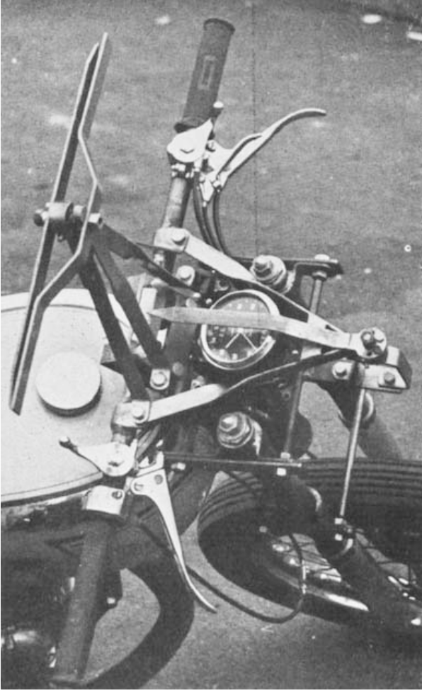
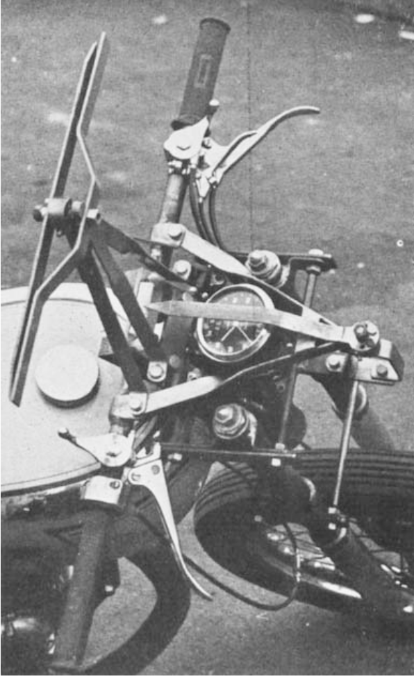

Steering and Stability of Single-Track Vehicles
Wilson-Jones, R. A.; 1951
Predicted counter torque for entering a turn
Pointed out that torques were very light and difficult to measure

|
 |
Jason K. Moore and Mont Hubbard
University of California, Davis
November 13, 2013
Predicted counter torque for entering a turn
Pointed out that torques were very light and difficult to measure
|
|
 |
Probably first recorded measurement of steer torque. Steady turns, turns, and figure 8's.


Potential first bicycle steer torque measurements
Larger torques about longitude compared to steer axis
Uses bi-axial force transducers at each grip.

Not sexy, but completely eliminates cross talk. Pure steer torque.
\(\pm17\) Nm range
$$ \sum \bar{T}^{G/s} = {}^N\dot{\bar{H}}^{G/g_o} + \bar{r}^{g_o/s} \times m_G\,{}^N\bar{a}^{g_o} $$
$$^N\bar{H}^{G/g_o} = I^{G/g_o} \cdot {}^N\bar{\omega}^G$$
$$^N\bar{\omega}^B = w_{b1}\hat{b}_1 + w_{b2}\hat{b}_2 + w_{b3}\hat{b}_3$$
$$ ^N\bar{\omega}^G = (w_{b1}c_\delta + w_{b2}s_\delta)\hat{g}_1 + (-w_{b1}s_\delta + w_{b2}c_\delta)\hat{g}_2 + w_{h3}\hat{g}_3 $$
$$^N\bar{a}^v = a_{v1}\hat{b}_1 + a_{v2}\hat{b}_2 + a_{v3}\hat{b}_3$$
$$ \begin{align} T_{\delta} = & I_{G_{22}} \left[ \left( -w_{b1} s_\delta + w_{b2} c_\delta \right) c_\delta + w_{b2} s_\delta \right] + I_{G_{33}} \dot{w}_{g3} + \nonumber \\ & I_{G_{31}} \left[ (-w_{g3} + w_{b3} ) w_{b1} s_\delta + (-w_{b3} + w_{g3}) w_{b2} c_\delta + s_\delta \dot{w}_{b2} + c_\delta \dot{w}_{b1} \right] + \nonumber \\ & \left[ I_{G_{11}} (w_{b1} c_\delta + w_{b2}s_\delta) + I_{G_{31}} w_{g3} \right] \left[-w_{b1} s_\delta + w_{b2} c_\delta \right] + \nonumber \\ & d m_G \left[ d (-w_{b1} s_\delta + w_{b2} c_\delta) (w_{b1} c_\delta + w_{b2} s_\delta) + d \dot{w}_{g3} \right] - \nonumber \\ & d m_G \left[-d_{s1} w_{b2}^{2} + d_{s3} \dot{w}_{b2} - (d_{s1} w_{b3} - d_{s3} w_{b1}) w_{b3} + a_{v1} \right] s_\delta + \nonumber \\ & d m_G \left[d_{s1} w_{b1} w_{b2} + d_{s1} \dot{w}_{b3} + d_{s3} w_{b2} w_{b3} - d_{s3} \dot{w}_{b1} + a_{v2} \right] c_\delta + \nonumber \\ & T_U + T_M \end{align} $$
$$T_B = T_{Bc} + T_{Bv}$$
$$ T_{Bc} = t_B \operatorname{sgn}(\dot\delta) = \begin{cases} t_B & \textrm{if $\dot{\delta}>0$}\\ 0 & \textrm{if $\dot{\delta}=0$}\\ -t_B & \textrm{if $\dot{\delta}<0$} \end{cases} $$
$$T_{Bv} = c_B \dot{\delta}$$
$$ I_{HF} \ddot{\delta} + c_B \dot{\delta} + t_B \operatorname{sgn}(\dot{\delta}) + 2 k l^2 \delta = 0 $$
$$c_B = 0.34 \pm 0.04 \textrm{N} \cdot \textrm{m} \cdot s^2$$ $$t_B = 0.15 \pm 0.05 \textrm{N} \cdot \textrm{m}$$
$$I_{HF} = 0.1297+/-0.0005 \textrm{kg}\cdot \textrm{m}^2$$
359 runs
| Statistic | Median | Maximum |
|---|---|---|
| Coefficient of Determination | 0.73 | 0.82 |
| Maximum Error | 2.45 | 6.59 |
| RMS of the Errors | 0.47 | 0.90 |
/
#